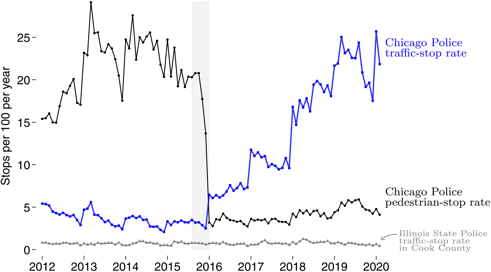

Police victimization, racial inequality, and the neighborhood context of aggressive policing
University of Manchester
University of Pennsylvania
Deep history of policing in Chicago
“In Chicago, the belief that the police hate Black people and mistreat them, brutalize them, torture the and kill them is so commonplace as to be banal” (Ralph 2020, 186)
“(…) Chicago’s South Side neighborhoods were under siege. The police broke down doors, pointed guns at parents and children, and assaulted suspects” (Hagan, McCarthy, and Herda 2022, 11)
The era of stop & frisk in Chicago

“In 2014, Chicago police stopped, questioned, and often frisked more than 718,000 people. That was a big number for a city of 2.7 million. It was more than three times the stop rate in the place best known for its aggressive stop & frisk policy, New York City” (Skogan 2022, 1)
The neighborhood context of the stop & frisk era in Chicago
“(…) during its peak year of 2014, 90 percent of those stopped were African Americans and Hispanics. From 2013 to 2015 more police enforcement actions were taken in Chicago’s predominately African American neighborhoods than there were people living there, every year” (Skogan 2022, 2)
What are the implications of such aggressive policing tactics…
\(\leadsto\) …for the neighborhood concentration of police use-of-force?
\(\leadsto\) …for the neighborhood concentration of civilian complaints about under-policing?
\(\leadsto\) …for people living in such over-policed neighborhoods?
Part 1 – Neighborhood-level analysis
Data and measures
Neighborhood-level data (\(N=865\) census tracts)
- Stop & Frisk records (2012–2015)
Counts of contact cards recorded by the CPD
- Use-of-force records (2012–2015)
Counts of Tactical Respose Records (TRR) recorded by the CPD
- Complaints about under-policing (2012–2015)
Counts of civilian complaints filed against CPD in which the allegations were: “neglect of duty”, “inadequate / failure to provide service”, or “slow / no response”
Data and measures
\(\leadsto\) Police-related variables
- Police-recorded violent crimes (2007–2010)
Includes records of homicides, robberies, and aggravated assault recorded by the CPD
\(\leadsto\) Social disorganization antecedents (US Census 2010)
- Concentrated disadvantage
- Residential stability
- Immigrant concentration
- Population density
Estimation strategy
Does stop & frisk concentrate where crime and social disorganization antecedents concentrate?
Is the concentration of stop & frisk practices associated with more police use-of-force records?
Is the concentration of stop & frisk practices associated with more complaints about under-policing?
\(\leadsto\) Spatial regression models (SLX) with logged/SQRT outcomes1
Spatial concentration of stop & frisk
Spatial regression models (SLX) controlling for residential stability, immigrant concentration, population density, and spatial dependence. \(N=865\).
Spatial concentration of police use-of-force
Spatial regression models (SLX) controlling for concentrated disadvantage, residential stability, immigrant concentration, population density, and spatial dependence. \(N=865\).
Spatial concentration of complaints about under-policing
Spatial regression models (SLX) controlling for concentrated disadvantage, residential stability, immigrant concentration, population density, and spatial dependence. \(N=865\).
Part 2 – Individual-level analysis
Data and measures
Project on Human Development in Chicago Neighborhoods (PHDCN)
- 6200 children from 7 age cohorts, born 1978 to 1996
- 3 interviews from 1995–2003
- Representative of Chicago and its neighborhoods
- 60% subsample of 4 cohorts
- 1057 interviewed in 2012
- 682 followed-up in 2021
- Followed throughout the US
Analytic strategy
287 out of those 682 PHDCN+ respondents were living in Chicago from 2012 to 2015, the era of stop & frisk (Skogan 2022)
- Cohort born in 1995 | age 17–20 in 2012–15 | age 26 in 2021
- Cohort born in 1986 | age 26–29 in 2012–15 | age 35 in 2021
- Cohort born in 1983 | age 29–32 in 2012–15 | age 38 in 2021
- Cohort born in 1980 | age 32–35 in 2012–15 | age 41 in 2021
Independent variable: Cumulative neighborhood exposure to police use-of-force (2012–2015)
We define \(D_{ijt}\) where \(T \in \{1, 2, 3, 4\}\) as the number of tactical response reports in neighborhood \(j\) where respondent \(i\) was residing during period \(t\). Periods here refer to years 2012 (\(t=1\)) through 2015 (\(t=5\)). We then define cumulative neighborhood exposure to police use-of-force as \(cum(D_{i})= \sum_{t=1}^{4}d_{ijt}\), i.e., the sum of all TRRs per individual across this four-year period
Analytic strategy
Dependent variables: Police victimization (measured in 2021)
- Police use-of-force
In your whole life, has a police officer ever used a weapon against you, such as a gun, Taser, stun gun, baton, nightstick, or pepper spray?
- Police abuse:
In your whole life, have you ever been searched, verbally abused, or physically threatened by a police officer?
- Police killing (vicarious):
Did you know anyone who was killed by a police officer?
Estimation strategy
Marginal structural models with residual balancingNeighborhood exposure to violent crime is a time-varying confounder, as police use-of-force and violent crime are dynamically related. Weights created using residual balancing permits appropriatelly controlling for time-varying confounders without introducing over-control bias.
Other (pre-exposure) controls:
- Gender | Cohort fixed effects
- Immigration status | Primary caregiver’s education
- CBCL internalizing scores | CBCL externalizing scores
The Child Behavior Checklist (CBCL) survey instrument was a parent-report questionnaire on which the child was rated on various behavioral and emotional problems.
\(\leadsto\) Effects disaggregated by ethnicity: White, Black, Latino
Implications of aggressive policing for residents of over-policed neighborhoods
Probability of police victimization
Marginal structural models estimated as Firth’s penalized linear probability models with weights created using residual balancing to control for dynamic exposure to neighborhood violence and robust Huber-White standard errors. \(N=257\).
Some concluding thoughts
In Chicago, aggressive policing tactics were widely used between 2012 and 2015 – the stop & frisk era (Skogan 2022)
“Confrontational proactive policing methods may have social benefits in crime reduction but costs inintrusion on the rights and privacy of innocent persons” (Manski and Nagin 2017, 9308)
Over-policed neighborhoods are more likely to have more incidents of police use-of-force
Yet, over-policed neighborhoods are more likely to have more complaints of neglect and unresponsiveness
“I see cops so often in my neighborhood, but when I see something bad going on, I look around and say ’where are the cops?” (18-year-old girl from Phildelphia interviewed by Carr, Napolitano, and Keating 2007, 458–59)
Some concluding thoughts
“(…) there are thee Chicagos, not one. The city’s large White, African American, and Hispanic neighborhoods differ dramatically in character, including their distinctive crime problems and their relationship with the police. In important ways residents live in different worlds” (Skogan 2022, 18)
- Black and Latino individuals residing in neighborhoods where police use-of-force concentrates are more likely to experience police victimization
\(\leadsto\) White residents are not
Thank you!
References